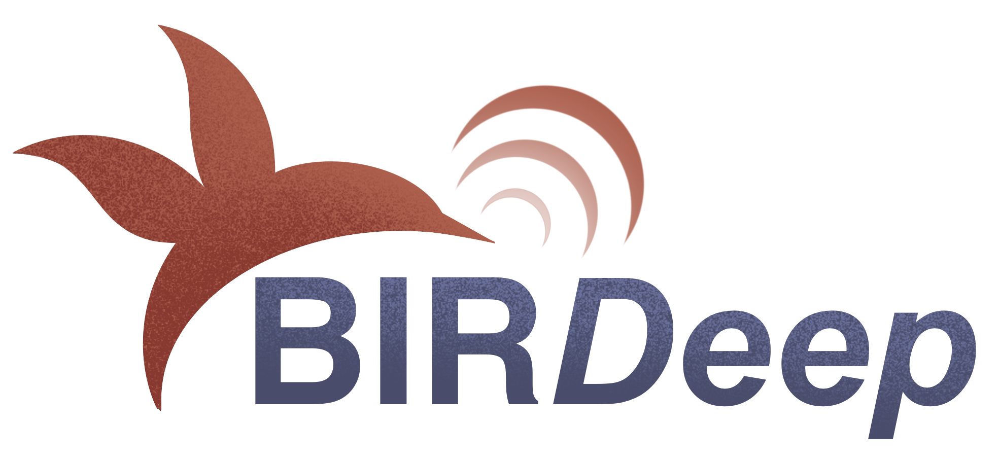
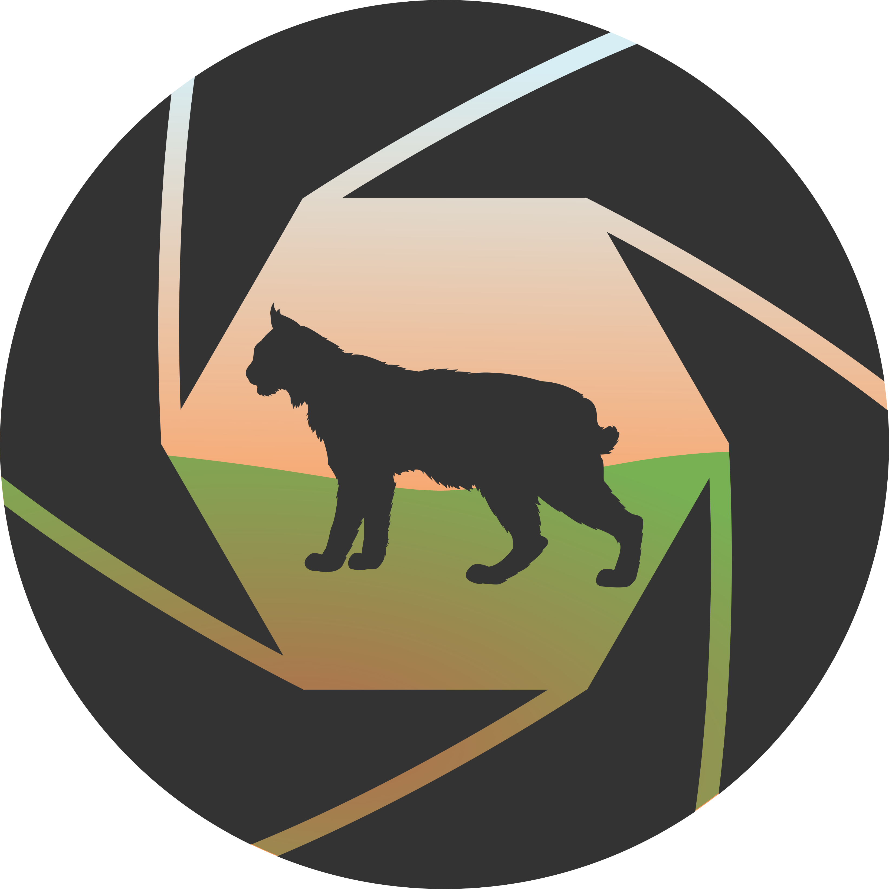

Passionate about AI, Deep Learning and Data Analysis
for Ecology and Conservation.
Explore some of the research projects I have been involved in.
They are mainly innovative projects at the intersection of Artificial Intelligence, Computer Vision, and biodiversity conservation. These projects delve into cutting-edge technologies such as generative AI and neural network-based classifiers and detection systems, all aimed at advancing ecological research and biodiversity monitoring.

BIRDeepWe are currently experiencing an ecological crisis in which species, their interactions, and the services nature provides to humans are being lost at an unprecedented rate. Therefore, it is urgent to develop diagnostic systems for ecosystem health that are fast, reliable, replicable, and automatic. Changes in the migration and abundance of songbird species are indicators of ecosystem health, as the arrival and departure dates of bird species are affected by climate change. Bird diversity monitoring has been conducted so far through expert censuses, but current technological advances allow us to greatly expand the spatial and temporal scales of study through passive acoustic monitoring. The main challenge is that petabytes of data are rapidly generated, exceeding what a human expert can manually annotate in a reasonable time. Therefore, it is necessary not only to automatically record bird songs but also to detect them. This proposal aims to automatically track songbird diversity by developing the bioinformatics and deep learning tools necessary to understand spatial-temporal changes in bird communities, in order to make accurate predictions in future scenarios. To do this, we will establish a bird song monitoring cyberinfrastructure in the Doñana National Park using open-source remote recorders combined with Raspberry Pi processors, leveraging the unique scientific-technical infrastructure already existing in Doñana (ICTS). We aim to automate species identification using convolutional neural networks. This multidisciplinary proposal will combine techniques from both ecology and data science to solve three specific tasks:
The researchers involved in this proposal have experience in both ecology and data science and will apply their deep knowledge of the Doñana bird community to the latest deep learning techniques applied to audio recognition. This proposal has a dual impact: on one hand, it will allow us to reliably assess changes in avifauna as a way to understand the health status of the Doñana ecosystem; on the other hand, it will enable a significant development of automatic biodiversity monitoring techniques, paving the way for establishing an automatic monitoring network at a national or European scale.

AI-CensusEcologists and wildlife managers often study the size, distribution and dynamic of animal populations using automated camera-traps. But, while the cameras can potentially take huge amounts of images, it doesn’t exist an automatic method for extracting the information of these images. Normally, the identification of the photographed species and the digitization of the data are carried out by technicians and it is so laborious that most of the knowledge is not exploited. Using artificial intelligence, we can classify, accurately and with low effort, large numbers of images from camera traps and automatically digitize the information on them. We aim to develop a tool for the census and monitoring of biodiversity, that helps wildlife researchers and managers in their purposes of knowing and protecting our nature.